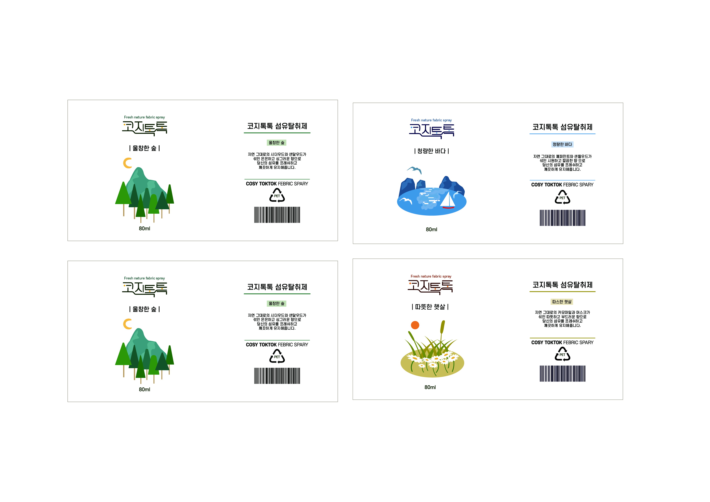

Package Design
01 Concept : Febric spray filled with nature


울창한 숲, 따뜻한 햇살, 청량한 바다
이 패키지는 도심속에서 지친 현대인들에게 도심속에서 자연을 느낄 수 있는 방법이 없을까
생각한 배경에서 시작되었습니다. 그리하여 자연에 퍼져있는 향을 담아 섬유탈취제로 만든다는
컨셉을 잡게 되었고, 그에맞는 디자인요소를 일러스트로 만들고 활용하여 만들었습니다. 네이밍
은 코지(cosy)하다 + 톡톡 뿌리다를 합쳐서 코지톡톡으로 만들었습니다.
02 Tone : Wood


종이 텍스쳐
자연에서 오는 향을 섬유탈취제로 만든다는 컨셉이기에, 전체적인 톤들은 과하지 않고 은은한,
내추럴한 색감과
친환경 종이가 떠오르는 질감으로 패키지 박스를 만드는데에 활용했습니다.
실제로 인쇄할때는 일반 질감으로
사용하되 작업할때 질감사진으로 하니까, 꽤 그럴싸 해보였고,
충분히 질감적인 느낌이 들었습니다.